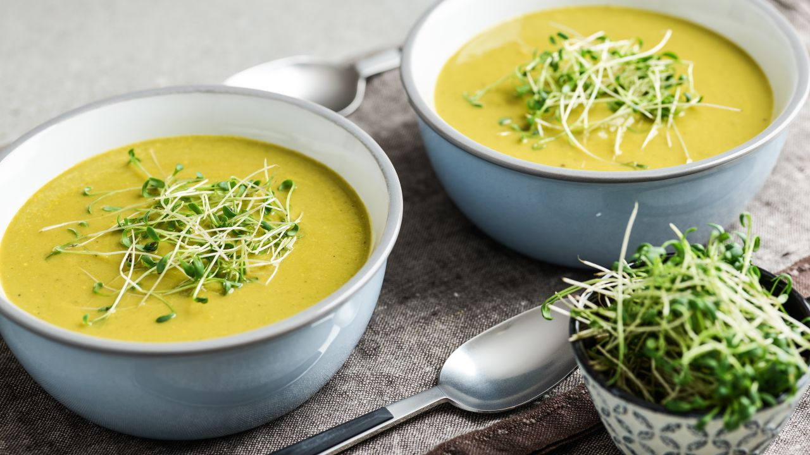

Eine köstliche Suppe, die sehr gut die körpereigene Entgiftung fördert und unterstützt.
| Benötigte Menge | Artikel |
|---|---|
| 80 g | Karotten |
| 130 g | Zucchini |
| 90 g | Grünkohl |
| 1 | Knoblauchzehe |
| 2 EL | Erdnussöl, hitzebeständig |
| 800 ml | Wasser |
| 1 EL | Tamari (Sojasauce) |
| 1 Prise | Kreuzkümmelpulver |
| Kristallsalz und Pfeffer aus der Mühle | |
| 280 g | Brokkoli |
| 2 TL | Miso Paste, Gerste |
| 40 g | Kresse |